1.0 Background & Literature Review
1.1 Backgroung
This visual investigation is based on VAST Challenge 2021 - The Kronos Incident Mini Challenge 1. The overview of the challenge is as below:
"In the roughly twenty years that Tethys-based GAStech has been operating a natural gas production site in the island country of Kronos, it has produced remarkable profits and developed strong relationships with the government of Kronos. However, GAStech has not been as successful in demonstrating environmental stewardship.
In January, 2014, the leaders of GAStech are celebrating their new-found fortune as a result of the initial public offering of their very successful company. In the midst of this celebration, several employees of GAStech go missing. An organization known as the Protectors of Kronos (POK) is suspected in the disappearance, but things may not be what they seem."
Mini-Challenge 1 looks at the relationships and conditions that led up to the kidnapping. As an analyst, you have a set of current and historical news reports at your disposal, as well as resumes of numerous GAStech employees and email headers from two weeks of internal GAStech company email. Can you identify the complex relationships among all of these people and organizations?
Questions
Characterize the news data sources provided. Which are primary sources and which are derivative sources? What are the relationships between the primary and derivative sources?
Characterize any biases you identify in these news sources, with respect to their representation of specific people, places, and events. Give examples.
Given the data sources provided, use visual analytics to identify potential official and unofficial relationships among GASTech, POK, the APA, and Government. Include both personal relationships and shared goals and objectives. Provide evidence for these relationships.
1.2 Literature Review of 2014 VAST Challenge
The 2021 IEEE VAST Challenge is a variation on a 2014 year’s challenge with modified data and new questions. So this literature review is based on some of the submissions from that year.
1) Timeline Visualizations
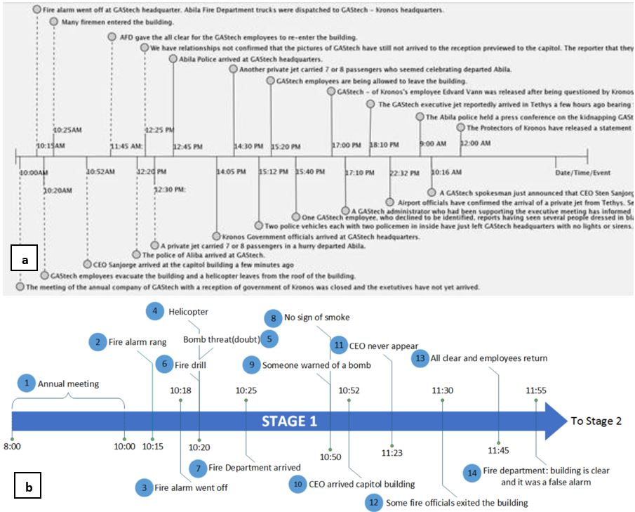
From the images above, the timeline in figure ‘a’ consists of too much text and appears to be very cluttered. When any graph is built, one must work on showing what is required and what is not. Putting in the whole text for every event makes it difficult for the user to identify the important aspects and also it is not very readable. The graph also seems a little inconsistent as a few of the vertical lines are dotted and some are not. There should have been a legend to show the differences.
Coming to timeline shown in figure ‘b’, even thought the plot is not cluttered, the circled numbers of events not being attached to the vertical lines makes it difficult to understand at what time instance the event falls under.
2) Text Visualization

In the figure above ,users are provided with text across various articles to compare. This makes it very difficult for a user to interpret the main aspects across all the articles. Instead of showcasing the whole text in the articles, the user could have been provided an option to select the articles he wants to compare and the visualization of these articles can be in the form of wordcloud which makes it more easy to look at the most important terms used.
Also if there are more articles to be included to the dataset, then the number of articles shown to the user would also increase making it all the more cluttered then it already is. Therefore, giving the option to the user to select the articles he wants to view and compare with would be a more ideal solution.
3) How Much is Too Much
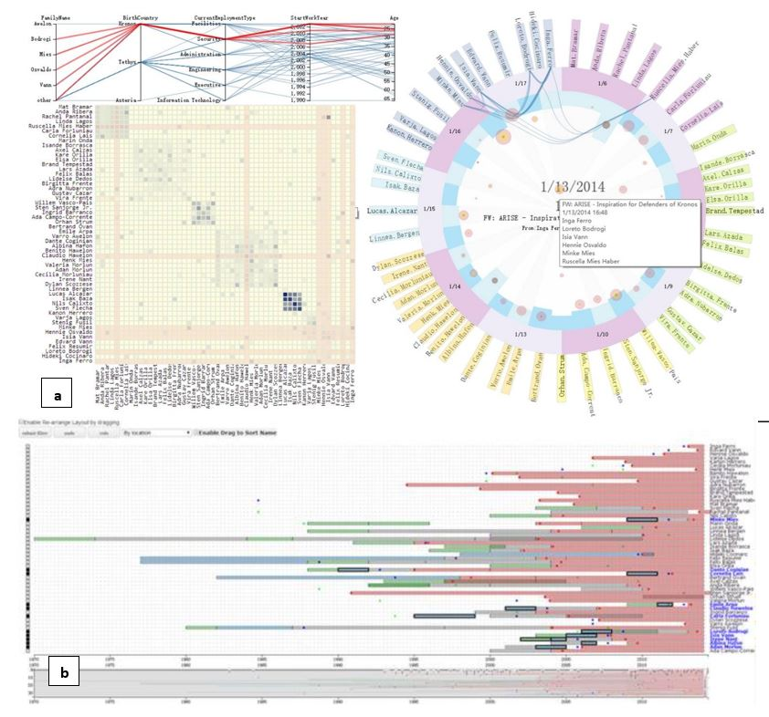
Screen shot ‘a’ of a visualization dashboard shown above consists of 3 different plots that contain too much of data making it difficult to view the wordings. When showcasing multiple plots in one page, it is better to use a subset of the data to visualize because by doing so, the amount of data to visualize would decrease and this makes the plots more readable. One way in which this approach can be achieved by clustering the data and then provide the use an option to select the cluster he wants to visualize.
The same applies for the second figure ‘b’. Here, the user is given an option to select a user from a dropdow. However, the comparisons performed with the selected user are too many and the plot appears to be very cluttered making it difficult to read the wordings. Similar to what was suggested earlier, considering clustering the data will help reduce the clutter.
4) Network Graph
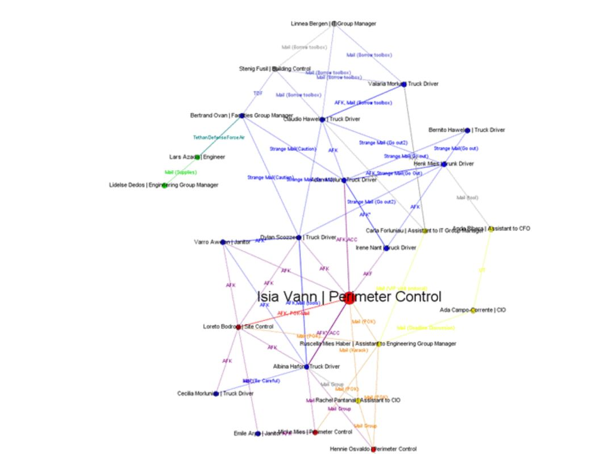
The network graph above, consists of many nodes and due to the overlap of the node names with the edges, some of the text is difficult to read. An alternat approact would e to divide the network graph into sub graphs. When the graph is divided, it makes the graphs less dense and also enhances the redability.
2.0 Data Preparation
1) Installing and Loading Necessary Packages
As part of the data processing, we first start with installing the required packages if they are not already installed and calling the libraries. The below chunk of code will handle all the necessary packages required without one needing to install manually. The required packages will only have to be mentioned in the ‘packages’ list. The purpose of requiring the below packages are:
tidyverse - Majority of the data cleaning function such as ‘read_csv’, ‘startWith’, ‘gsub’ etc all belong in this library.
DT - To display the data frame in an interactive manner to the user.
mgsub - This is similar to the use of ‘gsub’ but can specify more than 1 string pattern.
readxl - To read “.xlxs” or “.xls” files.
splitstackshape - The function ‘concat.split.multiple’ that is present in this package is used to split a string into multiple rows.
packages = c('tidyverse','DT','mgsub','readxl','splitstackshape')
for(p in packages){
if(!require(p, character.only = T)){
install.packages(p)
}
library(p, character.only = T)
}
2) Importing Provided Data
The data provided are a set of current and historical news reports, as well as resumes of numerous GAStech employees and email headers from two weeks of internal GAStech company email. The data in resumes folder has already been processed and is in the ‘EmployeeRecords.xlsx’ file. Therefore, we will be using that file directly.
| File/Folder Name | About |
|---|---|
| News Articles | Folder containing various newsgroups and news articles within them |
| resumes | Folder consisting of resumes of employees |
| EmployeeRecords.xlsx | Details on employees |
| email headers.csv | Email headers from two weeks |
Importing News Articles
Since there are multiple files in various folders, we specify the root directory which is the “News Articles” and write a function to read all files from folder into a data frame instead of using a for loop which is slower. After reading all files, we will save all the data into a variable called ‘raw_text’.
#root folder directory
news="data/News Articles/"
#define a function to read all files from folder into a data frame
read_folder=function(infolder){
tibble(file=dir(infolder,full.names=TRUE))%>%
mutate(text=map(file,read_lines))%>%
transmute(id=basename(file),text) %>%
unnest(text)
}
#read data
raw_text=tibble(folder=
dir(news,
full.names=TRUE)) %>%
mutate(folder_out=map(folder,
read_folder)) %>%
unnest(cols=c(folder_out)) %>%
transmute(newsgroup=basename(folder),id,text)
Importing Email and Employee data
For the data already present in either a “.xlsx” or “.csv” file, we can use the existing functions “read_excel” and “read_csv” respectively. These functions will read the data in the files and output them as data frames. “read_excel” function can be used for not only “.xlsx” but also “.xls” files.
employee_data <- read_excel("data/EmployeeRecords.xlsx")
email_data <- read_csv("data/email headers.csv")
3) Processing News Articles
Below is how the raw_text datatable looks like. It is visible that the data is very dirty and there is a lot of processing that has to be done.
head(raw_text,10)
# A tibble: 10 x 3
newsgroup id text
<chr> <chr> <chr>
1 All News Today 121.txt "SOURCE: All News Today"
2 All News Today 121.txt ""
3 All News Today 121.txt "TITLE: POK PROTESTS END IN ARRESTS "
4 All News Today 121.txt ""
5 All News Today 121.txt " "
6 All News Today 121.txt ""
7 All News Today 121.txt "PUBLISHED: 2005/04/06"
8 All News Today 121.txt " "
9 All News Today 121.txt ""
10 All News Today 121.txt "LOCATION: ELODIS, Kronos " Initial Cleaning Steps
Lets start by deleting the text that are empty strings and also it is noticeable that text starting with “SOURCE” is of no additional use to us as the content is already available in column ‘newsgroup’. Also, lets maintain the ‘id’ column as a number and remove the ‘.txt’ extension..
#delete empty cells
row_numbers=which(raw_text$text %in% c(""," "))
raw_text=raw_text[-c(row_numbers),]
#remove .txt from id
raw_text$id=gsub(".txt","",raw_text$id)
#remove the SOURCE as it s already there as newsgroup
row_numbers=which(grepl("SOURCE:",raw_text$text,fixed=TRUE))
raw_text=raw_text[-c(row_numbers),]
head(raw_text)
# A tibble: 6 x 3
newsgroup id text
<chr> <chr> <chr>
1 All News Tod~ 121 "TITLE: POK PROTESTS END IN ARRESTS "
2 All News Tod~ 121 "PUBLISHED: 2005/04/06"
3 All News Tod~ 121 "LOCATION: ELODIS, Kronos "
4 All News Tod~ 121 "Fifteen members of the Protectors of Kronos (P~
5 All News Tod~ 121 "When the federal police began arresting the PO~
6 All News Tod~ 135 "TITLE: RALLY SCHEDULED IN SUPPORT OF INCREASED~Processing Title
Instead of keeping all text in one column, it is better to have distinct columns for different contents. For example, there is a sub field starting with “TITLE” in the text column and it can be put into a new separate column. For this, we make use of two functions called ‘startsWith’ which checks if a string starts with the mentioned string and ‘gsub’ which replaces a string with another string.
raw_text$Title <-ifelse(startsWith(raw_text$text, "TITLE"),gsub("TITLE: ","",raw_text$text),"")
Do note that for text processing, one has to check the resultant datatable to see if there is any further modification required. In this case, after going through the data table, it was observed that file id 33 has misplaced text and this has to be separately handled as below.
#after exploring the data, it appears that the content of file 33 is not proper.
#So there is a need to modify it separately
raw_text$Title=ifelse(raw_text$id=="33",
ifelse(startsWith(raw_text$text, "PUBLISHED"),
gsub("PUBLISHED: ","",raw_text$text),""),
raw_text$Title)
Not all rows have the field Title, the below code will populate all records with Title. The function ‘unique’ is used to identify the unique values present in the datatable. The ‘which’ function returns the row numbers that meet the criteria. Function ‘match’ is used to obtain value from another dataframe based on the match condition. Lastly, we trim any spaces present at the start or end of the string. This is done using the function ‘str_trim’.
title_sub_dataframe=unique(raw_text[c("id","Title")])
row_numbers=which(title_sub_dataframe$Title=="")
title_sub_dataframe=title_sub_dataframe[-c(row_numbers),]
raw_text$Title=title_sub_dataframe$Title[match(raw_text$id,title_sub_dataframe$id)]
### trim space at start and end if there exists
raw_text$Title=str_trim(raw_text$Title, side = c("both"))
raw_text
# A tibble: 5,388 x 4
newsgroup id text Title
<chr> <chr> <chr> <chr>
1 All News T~ 121 "TITLE: POK PROTESTS END~ POK PROTESTS END IN AR~
2 All News T~ 121 "PUBLISHED: 2005/04/06" POK PROTESTS END IN AR~
3 All News T~ 121 "LOCATION: ELODIS, Krono~ POK PROTESTS END IN AR~
4 All News T~ 121 "Fifteen members of the ~ POK PROTESTS END IN AR~
5 All News T~ 121 "When the federal police~ POK PROTESTS END IN AR~
6 All News T~ 135 "TITLE: RALLY SCHEDULED ~ RALLY SCHEDULED IN SUP~
7 All News T~ 135 "PUBLISHED: 2012/04/09" RALLY SCHEDULED IN SUP~
8 All News T~ 135 "LOCATION: ABILA, Kronos~ RALLY SCHEDULED IN SUP~
9 All News T~ 135 "Silvia Marek, leader of~ RALLY SCHEDULED IN SUP~
10 All News T~ 135 "\"I'm calling for an en~ RALLY SCHEDULED IN SUP~
# ... with 5,378 more rowsLooked through the dataframe again and noticed that there are a few titles which do the fit the context. The below mentioned two titles are dates and do not fit the ‘Title’ column. Therefore, ‘ifelse’ statement is used to replace the mentioned titles to NA or else keep the title as it is.
Processing Location
Having processed ‘Title’, lets move on to ‘Location’. Using the similar logic as used in Title’, run the below chunk of code to create a new column called ‘Location’. Here, ‘mgsub’ function was used and not ‘gsub’ because here we have to check for more than 1 string pattern and it cannot be done with ‘gsub’ hence, ‘mgsub’ function was used for the same purpose.
raw_text$Location <-ifelse(startsWith(raw_text$text, "LOCATION"),
mgsub(raw_text$text, c("LOCATION: ", "LOCATIONS: "),
c("", "")),"")
location_sub_dataframe=unique(raw_text[c("id","Location")])
row_numbers=which(location_sub_dataframe$Location=="")
location_sub_dataframe=location_sub_dataframe[-c(row_numbers),]
raw_text$Location=location_sub_dataframe$Location[match(raw_text$id,location_sub_dataframe$id)]
head(raw_text)
# A tibble: 6 x 5
newsgroup id text Title Location
<chr> <chr> <chr> <chr> <chr>
1 All News T~ 121 "TITLE: POK PROTES~ POK PROTESTS END I~ "ELODIS, ~
2 All News T~ 121 "PUBLISHED: 2005/0~ POK PROTESTS END I~ "ELODIS, ~
3 All News T~ 121 "LOCATION: ELODIS,~ POK PROTESTS END I~ "ELODIS, ~
4 All News T~ 121 "Fifteen members o~ POK PROTESTS END I~ "ELODIS, ~
5 All News T~ 121 "When the federal ~ POK PROTESTS END I~ "ELODIS, ~
6 All News T~ 135 "TITLE: RALLY SCHE~ RALLY SCHEDULED IN~ "ABILA, K~The unique locations existing in the datatable are:
unique(raw_text$Location)
[1] "ELODIS, Kronos "
[2] "ABILA, Kronos "
[3] NA
[4] "Abila, Kronos "
[5] "ABILA, Kronos"
[6] "TITLE: KRONOS POLICE ARREST BLOTTER "
[7] "TITLE: OF TEN YEARS "
[8] "ELODIS, Kronos"
[9] "TITLE: ARREST BLOTTER OF THE POLICE FORCE KRONOS "
[10] "CENTRUM, Tethys "
[11] "TITLE: ELODIS PUBLIC HEALTH FACT SHEET "
[12] "TITLE: GOVERNMENT STANDS UP ANTI"
[13] "TITLE: GRAND OPENING GASTECH"
[14] "TITLE: Abila police break up sit"
[15] "TITLE: Multi"
[16] "This is the first confirmation that today's events surrounding GAStech "
[17] "Kronos will add Tethys which anti"
[18] "TITLE: DRYING PAPER OF THE HALTING OF THE POLICE OF KRONOS "
[19] "DAVOS, Switzerland "
[20] "TITLE: The movement of the block"
[21] "This Article is the second of three" Based at the locations available, there is further processing that has to be done. After further exploring, it is noticeable that a few files have “LOCATION: TITLE:…”. This does not make any sense and therefore, any text starting with “TITLE” under the column location can be replace with NA. Also, the syntax for a valid location is “City, Country” as seen from the unique values above, therefore, replacing all strings with no ‘,’ with NA will remove all other text present. Lastly, maintain the naming convention by keeping the city in capitals and country in a title format meaning only the first letter will be capital and others in lower case.
## need to further clean location
### replace everything that starts with TITLE to NA
raw_text$Location <-ifelse(startsWith(raw_text$Location, "TITLE"),NA,raw_text$Location)
### replace everything without ',' with NA
raw_text$Location <-ifelse(grepl(",",raw_text$Location,fixed=TRUE),raw_text$Location,NA)
### trim space at end
raw_text$Location=str_trim(raw_text$Location, side = c("both"))
### Standardize all names
raw_text$Location <-ifelse(!is.na(raw_text$Location),
paste0(toupper(substring(raw_text$Location,1,
gregexpr(pattern=',',
raw_text$Location)[[1]][1])),
substring(raw_text$Location,
gregexpr(pattern =',',
raw_text$Location)[[1]][1]+1,)),
raw_text$Location)
unique(raw_text$Location)
[1] "ELODIS, Kronos" "ABILA, Kronos" NA
[4] "CENTRUM, Tethys" "DAVOS, Switzerland"The location values now look clean and tidy.
Processing Published
raw_text$Published <-ifelse(startsWith(raw_text$text, "PUBLISHED") |
startsWith(raw_text$text, " PUBLISHED"),
mgsub(raw_text$text, c("PUBLISHED: ", " PUBLISHED: "),
c("", "")),
"")
#after exploring the data, it appears that the content of file 33 is not proper.
#So there is a need to modify it separately
raw_text$Published=ifelse(raw_text$id=="33",
ifelse(startsWith(raw_text$text, "AUTHOR"),
gsub("AUTHOR: ","",raw_text$text),""),
raw_text$Published)
published_sub_dataframe=unique(raw_text[c("id","Published")])
row_numbers=which(published_sub_dataframe$Published=="")
published_sub_dataframe=published_sub_dataframe[-c(row_numbers),]
raw_text$Published=published_sub_dataframe$Published[match(raw_text$id,published_sub_dataframe$id)]
### trim space at start and end if there exists
raw_text$Published=str_trim(raw_text$Published, side = c("both"))
head(raw_text,10)
# A tibble: 10 x 6
newsgroup id text Title Location Published
<chr> <chr> <chr> <chr> <chr> <chr>
1 All News ~ 121 "TITLE: POK PR~ POK PROTESTS E~ ELODIS,~ 2005/04/~
2 All News ~ 121 "PUBLISHED: 20~ POK PROTESTS E~ ELODIS,~ 2005/04/~
3 All News ~ 121 "LOCATION: ELO~ POK PROTESTS E~ ELODIS,~ 2005/04/~
4 All News ~ 121 "Fifteen membe~ POK PROTESTS E~ ELODIS,~ 2005/04/~
5 All News ~ 121 "When the fede~ POK PROTESTS E~ ELODIS,~ 2005/04/~
6 All News ~ 135 "TITLE: RALLY ~ RALLY SCHEDULE~ ABILA, ~ 2012/04/~
7 All News ~ 135 "PUBLISHED: 20~ RALLY SCHEDULE~ ABILA, ~ 2012/04/~
8 All News ~ 135 "LOCATION: ABI~ RALLY SCHEDULE~ ABILA, ~ 2012/04/~
9 All News ~ 135 "Silvia Marek,~ RALLY SCHEDULE~ ABILA, ~ 2012/04/~
10 All News ~ 135 "\"I'm calling~ RALLY SCHEDULE~ ABILA, ~ 2012/04/~The unique published dates existing in the datatable are:
unique(raw_text$Published)
[1] "2005/04/06" "2012/04/09"
[3] "1993/02/02" "Petrus Gerhard"
[5] "1998/05/15" "2004/05/29"
[7] "2013/06/21" "2001/03/22"
[9] "1998/11/15" "2009/06/20"
[11] "2007/03/21" "1999/07/08"
[13] "1998/05/16" "2009/03/12"
[15] "2012/06/20" "2014/01/19"
[17] "2012/09/08" "2011/06/21"
[19] "By Haneson Ngohebo" "2014/01/20"
[21] "2009/02/21" "2009/06/21"
[23] "1997/10/17" "2013/12/17"
[25] "2011/11/23" "2000/10/04"
[27] "2000/08/18" "2009/03/14"
[29] "2005/09/26" "2010/06/15"
[31] "2011/05/15" "2007/04/11"
[33] "1998/11/17" "2010/10/04"
[35] "2012/03/10" "2010/06/21"
[37] "2011/07/29" "1997/04/24"
[39] "2012/08/24" "2005/09/25"
[41] "2011/07/28" "1997/04/23"
[43] "1997/10/16" "2012/08/23"
[45] "2010/10/03" "2010/06/14"
[47] "1998/11/16" "2000/10/02"
[49] "2009/02/19" "2000/08/17"
[51] "2009/03/13" "20 January 2014"
[53] "21 January 2014" "2012/11/11"
[55] "2002/05/27" "2001/09/02"
[57] "1998/05/17" "2004/05/31"
[59] "1998/03/21" "2001/03/23"
[61] "2009/03/09" "2014/03/26"
[63] "2012/06/22" "1998/04/27"
[65] "2013/06/22" "2000/06/01"
[67] "1993/02/04" "2005/04/07"
[69] "2012/04/10" "1998/08/21"
[71] "2013/02/24" "1999/11/16"
[73] "2009/02/23" "1982/10/03"
[75] "21 October 2013" "2007/03/19"
[77] "2012/06/21" "2009/06/23"
[79] "2014/01/21" "1984/05/05"
[81] "2013/11/13" "2012/02/22"
[83] "2013/02/09" "19 January 2014"
[85] "22 March 2001" "20 June 2011"
[87] "20 June 2012" "05 April 2005"
[89] "31 May 2000" "20 June 2013"
[91] "19 August 1998" "12 March 2009"
[93] "25 May 2002" "7 September 2012"
[95] "15 May 1998" "9 April 2012"
[97] "14 November 1998" "7 July 1999"
[99] "25 April 1998" "31 August 2001"
[101] "2 February 1993" "20 March 2007"
[103] "19 March 1998" "19 June 2009"
[105] "29 May 2004" "7 March 2009"
[107] "19 June 2010" "2001/08/31"
[109] "1993/01/19" "2013/12/16"
[111] "2013/06/20" "1995/10/11"
[113] "1995/11/21" "2001/03/18"
[115] "2009/02/18" "1996/03/14"
[117] "1999/07/04" "22 February 2013"
[119] "21 January 2014 1405" "20 February 2012"
[121] "22 June 2009" "4 October 1982"
[123] "14 November 1999" "12 November 2013"
[125] "22 February 2009" "18 March 2007"
[127] "2 October 1982" "7 February 2013"
[129] "3 May 1984" "18 February 2009"
[131] "15 December 2013" "17 March 2001"
[133] "30 August 2001" "14 June 2001"
[135] "7 March 2012" "18 January 1998"
[137] "13 March 1996" "21 November 1995"
[139] "3 July 1999" "20 June 2010"
[141] "10 October 1995" "21 June 2012"
[143] "27 July 2011" "20 June 2009"
[145] "9 November 1998" "18 January 1993"
[147] "12 March 1993" "6 April 2005"
[149] "2007/04/12" "2000/10/03"
[151] "1997/04/25" "2013/12/18"
[153] "2010/06/22" "2011/11/24"
[155] "12 November 2012" "1999/11/15"
[157] "1996/07/08" "2013/02/08"
[159] "2009/06/22" "2012/08/22"
[161] "1997/10/15" "17 December 2013"
[163] "1984/05/04" "1998/08/20"
[165] "5 February 2012" "1998/01/19"
[167] "2010/06/19" "2013/02/22"
[169] "1995/03/30" "1993/03/13"
[171] "2003/05/17" "1992/12/12"
[173] "2000/08/15" "2009/03/08"
[175] "21 June 2009" "2013/09/03"
[177] "1998/11/10" "2001/09/01"
[179] "1994/09/24" "2012/03/09"
[181] "12 August 2009" "1998/11/14"
[183] "2013/10/22" "1993/02/03"
[185] "2009/05/16" "1993/09/20"
[187] "2002/05/25" "1999/02/19"
[189] "1994/02/18" "2001/06/15"
[191] "2004/05/30" "2000/01/15"
[193] "2012/03/08" "2012/02/21"
[195] "30 June 2013" "1995/11/22"
[197] "2 October 2010" "8 March 2012"
[199] "15 October 1997" "24 September 2005"
[201] "2 October 2000" "22 August 2012"
[203] "14 May 2011" "15 November 1998"
[205] "16 August 2000" "22 November 2011"
[207] "10 April 2007" "23 April 1997"
[209] "19 February 2009" "13June 2010"
[211] "16 December 2013" "2010/03/05"
[213] "2009/02/20" "2011/05/16"
[215] "2000/01/17" "1994/09/25"
[217] "2009/02/22" "2000/08/16"
[219] "1999/02/20" "2013/09/04"
[221] "2010/12/18" "2003/05/19"
[223] "1995/10/12" "1993/09/21"
[225] "2009/05/17" "1992/12/13"
[227] "1995/04/01" "2012/06/23"
[229] "2001/06/16" "1995/11/23"
[231] "1996/03/15" "2005/04/08"
[233] "2011/06/22" "1998/01/20"
[235] "2000/01/16" "1995/03/31"
[237] "2002/05/26" "1999/07/09"
[239] "2007/03/22" "2001/03/24"
[241] "1998/03/20" "2012/11/12"
[243] "1993/01/20" "1993/03/14"
[245] "2010/12/19" "1996/07/09"
[247] "30 March 1995" "15 May 2009"
[249] "15 January 2000" "13 November 1998"
[251] "7 July 1996" "15 August 2000"
[253] "18 February 1999" "17 May 2003"
[255] "11 December 1992" "19 September 1993"
[257] "17 February 1994" "2 September 2013"
[259] "23 September 1994" "1998/04/26"
[261] "2012/04/11" "2000/06/02"
[263] "2003/05/18" "1993/09/19"
[265] "1982/10/04" "2007/03/20"
[267] "October 21, 2013" "1984/05/03"
[269] "1982/10/02" "1999/11/14"
[271] "1999/07/05" The date is of many different formats and some are even in text. All of these are processed in the below chunk of code. We first convert all the data that is not in a date format to date.
Next, convert all dates in “21 January 2014” format to “Y/M/D”. The ‘as.Date’ function can be used to convert the text into date and then formatting it again using ‘format’ function to obtain “Y/M/D” format.
## filtering published dates in "21 January 2014" format and converting them to Y/M/D format
dates_to_format=str_extract(raw_text$Published, "^[0-9]{1,2}\\D[a-zA-Z]+\\D[0-9]{4}")
dates_to_format=unique(dates_to_format)
dates_to_format=dates_to_format[!is.na(dates_to_format)]
sub_dates=unique(raw_text[c("id","Published")]) %>% filter(Published %in% dates_to_format)
sub_dates$Published=as.Date(sub_dates$Published,format="%d %B %Y")
sub_dates$Published=format(sub_dates$Published,"%Y/%m/%d")
raw_text$subdates=sub_dates$Published[match(raw_text$id,sub_dates$id)]
Since there are a few texts present in the Published column, after looking into the files of those id’s, it was noticeable that the date was in the next line and therefore, for these texts, the published date should be taken from the next immediate row.
## words improper
dates_to_format=str_extract(raw_text$Published, c("Petrus Gerhard","By Haneson Ngohebo"))
dates_to_format=unique(dates_to_format)
dates_to_format=dates_to_format[!is.na(dates_to_format)]
sub_dates2=raw_text %>% filter(Published %in% dates_to_format)
row_numbers=which(startsWith(sub_dates2$text, "PUBLISHED"))
row_numbers=row_numbers+1
subset=sub_dates2[row_numbers,]
sub_dates2$Published=subset$text[match(sub_dates2$id,subset$id)]
raw_text$subdates2=sub_dates2$Published[match(raw_text$id,sub_dates2$id)]
We then update the ‘Published’ column with the modified dates using the code below.
unique(raw_text$Published)
[1] "2005/04/06" "2012/04/09" "1993/02/02"
[4] "1998/03/20" "1998/05/15" "2004/05/29"
[7] "2013/06/21" "2001/03/22" "1998/11/15"
[10] "2009/06/20" "2007/03/21" "1999/07/08"
[13] "1998/05/16" "2009/03/12" "2012/06/20"
[16] "2014/01/19" "2012/09/08" "2011/06/21"
[19] "2014/01/20" "2009/02/21" "2009/06/21"
[22] "1997/10/17" "2013/12/17" "2011/11/23"
[25] "2000/10/04" "2000/08/18" "2009/03/14"
[28] "2005/09/26" "2010/06/15" "2011/05/15"
[31] "2007/04/11" "1998/11/17" "2010/10/04"
[34] "2012/03/10" "2010/06/21" "2011/07/29"
[37] "1997/04/24" "2012/08/24" "2005/09/25"
[40] "2011/07/28" "1997/04/23" "1997/10/16"
[43] "2012/08/23" "2010/10/03" "2010/06/14"
[46] "1998/11/16" "2000/10/02" "2009/02/19"
[49] "2000/08/17" "2009/03/13" "2014/01/21"
[52] "2012/11/11" "2002/05/27" "2001/09/02"
[55] "1998/05/17" "2004/05/31" "1998/03/21"
[58] "2001/03/23" "2009/03/09" "2014/03/26"
[61] "2012/06/22" "1998/04/27" "2013/06/22"
[64] "2000/06/01" "1993/02/04" "2005/04/07"
[67] "2012/04/10" "1998/08/21" "2013/02/24"
[70] "1999/11/16" "2009/02/23" "1982/10/03"
[73] "2013/10/21" "2007/03/19" "2012/06/21"
[76] "2009/06/23" "1984/05/05" "2013/11/13"
[79] "2012/02/22" "2013/02/09" "2011/06/20"
[82] "2005/04/05" "2000/05/31" "2013/06/20"
[85] "1998/08/19" "2002/05/25" "2012/09/07"
[88] "1998/11/14" "1999/07/07" "1998/04/25"
[91] "2001/08/31" "2 February 1993" "2007/03/20"
[94] "1998/03/19" "2009/06/19" "2009/03/07"
[97] "2010/06/19" "1993/01/19" "2013/12/16"
[100] "1995/10/11" "1995/11/21" "2001/03/18"
[103] "2009/02/18" "1996/03/14" "1999/07/04"
[106] "2013/02/22" "2012/02/20" "2009/06/22"
[109] "1982/10/04" "1999/11/14" "2013/11/12"
[112] "2009/02/22" "2007/03/18" "1982/10/02"
[115] "2013/02/07" "1984/05/03" "2013/12/15"
[118] "2001/03/17" "2001/08/30" "2001/06/14"
[121] "2012/03/07" "1998/01/18" "1996/03/13"
[124] "1999/07/03" "2010/06/20" "1995/10/10"
[127] "2011/07/27" "1998/11/09" "1993/01/18"
[130] "1993/03/12" "2007/04/12" "2000/10/03"
[133] "1997/04/25" "2013/12/18" "2010/06/22"
[136] "2011/11/24" "2012/11/12" "1999/11/15"
[139] "1996/07/08" "2013/02/08" "2012/08/22"
[142] "1997/10/15" "1984/05/04" "1998/08/20"
[145] "2012/02/05" "1998/01/19" "1995/03/30"
[148] "1993/03/13" "2003/05/17" "1992/12/12"
[151] "1998/04/26" "2000/08/15" "2009/03/08"
[154] "2013/09/03" "1998/11/10" "2001/09/01"
[157] "1994/09/24" "2012/03/09" "2009/08/12"
[160] "2013/10/22" "1993/02/03" "2009/05/16"
[163] "1993/09/20" "1999/02/19" "1994/02/18"
[166] "2001/06/15" "2004/05/30" "2000/01/15"
[169] "2012/03/08" "2012/02/21" "2013/06/30"
[172] "1995/11/22" "20 January 2014" "21 January 2014"
[175] "2010/10/02" "2005/09/24" "2011/05/14"
[178] "2000/08/16" "2011/11/22" "2007/04/10"
[181] "2010/06/13" "2010/03/05" "2009/02/20"
[184] "2011/05/16" "2000/01/17" "1994/09/25"
[187] "1999/02/20" "2013/09/04" "2010/12/18"
[190] "2003/05/19" "1995/10/12" "1993/09/21"
[193] "2009/05/17" "1992/12/13" "1995/04/01"
[196] "2012/06/23" "2001/06/16" "1995/11/23"
[199] "1996/03/15" "2005/04/08" "2011/06/22"
[202] "1998/01/20" "2000/01/16" "1995/03/31"
[205] "2002/05/26" "1999/07/09" "2007/03/22"
[208] "2001/03/24" "1993/01/20" "1993/03/14"
[211] "2010/12/19" "1996/07/09" "2009/05/15"
[214] "1998/11/13" "1996/07/07" "1999/02/18"
[217] "1992/12/11" "1993/09/19" "1994/02/17"
[220] "2013/09/02" "1994/09/23" "2012/04/11"
[223] "2000/06/02" "2003/05/18" "1999/07/05" There seem to be still other formats of dates present. The below code will process them into the date formats like other dates.
dates_to_format=str_extract(raw_text$Published, "^[0-9]{1,2}\\D[a-zA-Z]+\\D{1,2}[0-9]{4}")
dates_to_format=unique(dates_to_format)
dates_to_format=dates_to_format[!is.na(dates_to_format)]
sub_dates3=unique(raw_text[c("id","Published")]) %>% filter(Published %in% dates_to_format)
sub_dates3$Published=as.Date(sub_dates3$Published,format="%d %B %Y")
sub_dates3$Published=format(sub_dates3$Published,"%Y/%m/%d")
raw_text$subdates3=sub_dates3$Published[match(raw_text$id,sub_dates3$id)]
Now we will update the Publish column again and remove all other temporary column we create as part of processing.
raw_text$Published=ifelse(!is.na(raw_text$subdates3),raw_text$subdates3,raw_text$Published)
raw_text=raw_text[,!(names(raw_text) %in% c("subdates","subdates2","subdates3"))]
raw_text$Published=as.Date(raw_text$Published,format="%Y/%m/%d")
raw_text
# A tibble: 5,388 x 6
newsgroup id text Title Location Published
<chr> <chr> <chr> <chr> <chr> <date>
1 All News ~ 121 "TITLE: POK PR~ POK PROTESTS ~ ELODIS,~ 2005-04-06
2 All News ~ 121 "PUBLISHED: 20~ POK PROTESTS ~ ELODIS,~ 2005-04-06
3 All News ~ 121 "LOCATION: ELO~ POK PROTESTS ~ ELODIS,~ 2005-04-06
4 All News ~ 121 "Fifteen membe~ POK PROTESTS ~ ELODIS,~ 2005-04-06
5 All News ~ 121 "When the fede~ POK PROTESTS ~ ELODIS,~ 2005-04-06
6 All News ~ 135 "TITLE: RALLY ~ RALLY SCHEDUL~ ABILA, ~ 2012-04-09
7 All News ~ 135 "PUBLISHED: 20~ RALLY SCHEDUL~ ABILA, ~ 2012-04-09
8 All News ~ 135 "LOCATION: ABI~ RALLY SCHEDUL~ ABILA, ~ 2012-04-09
9 All News ~ 135 "Silvia Marek,~ RALLY SCHEDUL~ ABILA, ~ 2012-04-09
10 All News ~ 135 "\"I'm calling~ RALLY SCHEDUL~ ABILA, ~ 2012-04-09
# ... with 5,378 more rowsProcessing Content
Since we have extracted “TITLE”, “LOCATION” and ’PUBLISHED" from the text column and created separate columns for them ,we can exclude all the records that have the “text” column consisting of these content.
# removing text with TITLE:, LOCATION:, PUBLISHED:
row_numbers1=which(startsWith(raw_text$text, "TITLE"))
row_numbers2=which(startsWith(raw_text$text, "PUBLISHED"))
row_numbers3=which(startsWith(raw_text$text, " PUBLISHED"))
row_numbers4=which(startsWith(raw_text$text, "LOCATION"))
row_numbers5=which(startsWith(raw_text$text, "AUTHOR"))
raw_text=raw_text[-c(row_numbers1,row_numbers2,row_numbers3,row_numbers4,row_numbers5),]
raw_text
# A tibble: 3,015 x 6
newsgroup id text Title Location Published
<chr> <chr> <chr> <chr> <chr> <date>
1 All News ~ 121 "Fifteen membe~ POK PROTESTS ~ ELODIS,~ 2005-04-06
2 All News ~ 121 "When the fede~ POK PROTESTS ~ ELODIS,~ 2005-04-06
3 All News ~ 135 "Silvia Marek,~ RALLY SCHEDUL~ ABILA, ~ 2012-04-09
4 All News ~ 135 "\"I'm calling~ RALLY SCHEDUL~ ABILA, ~ 2012-04-09
5 All News ~ 152 "In a glitzy p~ LACK OF DETAI~ ABILA, ~ 1993-02-02
6 All News ~ 154 "1998/03/20" ELODIS, KRONO~ ELODIS,~ 1998-03-20
7 All News ~ 154 "NOTE: This ar~ ELODIS, KRONO~ ELODIS,~ 1998-03-20
8 All News ~ 154 "This article ~ ELODIS, KRONO~ ELODIS,~ 1998-03-20
9 All News ~ 154 "ELODIS, Krono~ ELODIS, KRONO~ ELODIS,~ 1998-03-20
10 All News ~ 154 "Two weeks pri~ ELODIS, KRONO~ ELODIS,~ 1998-03-20
# ... with 3,005 more rowsGoing through the text column, it was visible that there are dates present in some records this is due to some files having Published date in the next line which was discussed under “Processing Published” category. These dates are present in “yyyy/mm/dd” format or “date month year” format. The below regular expressions were used to detect those patterns in the text column. It was identified that there were 7 dates however only 5 of them were recognized, therefore, the other 2 were added manually.
raw_text1=str_extract(raw_text$text,c("^[0-9]{1,2}\\D[a-zA-Z]+\\D[0-9]{4}","^[0-9]{4}\\D[0-9]{1,2}\\D[0-9]{1,2}"))
raw_text1=unique(raw_text1)
raw_text1=raw_text1[!is.na(raw_text1)]
raw_text1[6] ="1998/05/15"
raw_text1[7] ="17 January 1995"
row_numbers6=which(raw_text$text %in% raw_text1)
raw_text=raw_text[-c(row_numbers6),]
Now, we have to combine all the recodes with the same id. After processing, we now will have 845 records that reflect the 845 files that we have and each record consists of the “newsgroup”, “id”, “Title”, “Location”, “Published” and “Content”.
content=raw_text %>%
group_by(id) %>%
summarise_all(funs(toString(na.omit(.))))
raw_text=raw_text[,!(names(raw_text) %in% c("text"))]
raw_text$Content=content$text[match(raw_text$id,content$id)]
cleaned_text=unique(raw_text)
cleaned_text
# A tibble: 845 x 6
newsgroup id Title Location Published Content
<chr> <chr> <chr> <chr> <date> <chr>
1 All News ~ 121 POK PROTESTS ~ ELODIS,~ 2005-04-06 "Fifteen membe~
2 All News ~ 135 RALLY SCHEDUL~ ABILA, ~ 2012-04-09 "Silvia Marek,~
3 All News ~ 152 LACK OF DETAI~ ABILA, ~ 1993-02-02 "In a glitzy p~
4 All News ~ 154 ELODIS, KRONO~ ELODIS,~ 1998-03-20 "NOTE: This ar~
5 All News ~ 237 ELODIS, KRONO~ <NA> 1998-05-15 "NOTE: This ar~
6 All News ~ 251 ELODIS PUBLIC~ ELODIS,~ 2004-05-29 "The Elodis Co~
7 All News ~ 341 WHO BRINGS A ~ ABILA, ~ 2013-06-21 "ABILA, Kronos~
8 All News ~ 391 TAX MEASURE D~ ABILA, ~ 2001-03-22 "A measure to ~
9 All News ~ 420 POK REPRESENT~ ABILA, ~ 1998-11-15 "Representativ~
10 All News ~ 554 ELIAN KAREL D~ ABILA, ~ 2009-06-20 "Elian Karel, ~
# ... with 835 more rows4) Processing Email and Employee Data
Considering that the data is based on email, we can make use of the networking graph for visualization and for that purpose, we will need the data to be in the “source” and “target” format. The email_data dataframe currently is very raw and needs to be processed to the required format.
head(email_data,10)
# A tibble: 10 x 4
From To Date Subject
<chr> <chr> <chr> <chr>
1 Varja.Lagos@ga~ Varja.Lagos@gastech.com.k~ 1/6/20~ Patrol schedule~
2 Brand.Tempesta~ Birgitta.Frente@gastech.c~ 1/6/20~ Wellhead flow r~
3 Isak.Baza@gast~ Isak.Baza@gastech.com.kro~ 1/6/20~ RE: GT-SeismicP~
4 Lucas.Alcazar@~ Isak.Baza@gastech.com.kro~ 1/6/20~ RE: GT-SeismicP~
5 Linnea.Bergen@~ Rachel.Pantanal@gastech.c~ 1/6/20~ RE: Upcoming bi~
6 Loreto.Bodrogi~ Ingrid.Barranco@gastech.c~ 1/6/20~ Plants
7 Linnea.Bergen@~ Rachel.Pantanal@gastech.c~ 1/6/20~ RE: Upcoming bi~
8 Lucas.Alcazar@~ Nils.Calixto@gastech.com.~ 1/6/20~ GT-SeismicProce~
9 Isak.Baza@gast~ Isak.Baza@gastech.com.kro~ 1/6/20~ RE: GT-SeismicP~
10 Lucas.Alcazar@~ Isak.Baza@gastech.com.kro~ 1/6/20~ RE: GT-SeismicP~The “To” column has various email id’s that are seperated by a ‘,’. We first need to split all the id’s by ‘,’ and then use the ‘concat.split.multiple’ function to split all the emails in “To” into multiple rows.
# break on , in "To"
email_data_clean <- cSplit(email_data,splitCols= "To", sep=",", direction="long")
glimpse(email_data_clean)
Rows: 8,990
Columns: 4
$ From <chr> "Varja.Lagos@gastech.com.kronos", "Varja.Lagos@gaste~
$ To <fct> Varja.Lagos@gastech.com.kronos, Hennie.Osvaldo@gaste~
$ Date <chr> "1/6/2014 10:28", "1/6/2014 10:28", "1/6/2014 10:28"~
$ Subject <chr> "Patrol schedule changes", "Patrol schedule changes"~Next, we shall remove the email id’s where the “From” and “To” are the same. This is to ensure that when be plot the networking graph, we will not have the same user who send an email to himself.
# removing same from and to
row_numbers=which(email_data_clean$From ==email_data_clean$To)
email_data_clean=email_data_clean[-c(row_numbers),]
glimpse(email_data_clean)
Rows: 8,185
Columns: 4
$ From <chr> "Varja.Lagos@gastech.com.kronos", "Varja.Lagos@gaste~
$ To <fct> Hennie.Osvaldo@gastech.com.kronos, Loreto.Bodrogi@ga~
$ Date <chr> "1/6/2014 10:28", "1/6/2014 10:28", "1/6/2014 10:28"~
$ Subject <chr> "Patrol schedule changes", "Patrol schedule changes"~Since both the date and the time are displayed in the same column, we shall separate these two and change their datatype accordingly.
# separating time and date
email_data_clean <- cSplit(email_data_clean, splitCols="Date",sep= " ")
#changing type of date 1,2
email_data_clean$Date_1=as.Date(email_data_clean$Date_1,format="%m/%d/%Y")
email_data_clean$Date_2=format(strptime(email_data_clean$Date_2, format="%H:%M"), format = "%H:%M")
glimpse(email_data_clean)
Rows: 8,185
Columns: 5
$ From <chr> "Varja.Lagos@gastech.com.kronos", "Varja.Lagos@gaste~
$ To <fct> Hennie.Osvaldo@gastech.com.kronos, Loreto.Bodrogi@ga~
$ Subject <chr> "Patrol schedule changes", "Patrol schedule changes"~
$ Date_1 <date> 2014-01-06, 2014-01-06, 2014-01-06, 2014-01-06, 201~
$ Date_2 <chr> "10:28", "10:28", "10:28", "10:35", "10:35", "10:35"~The whole email id is not required. Therefore, we will remove everything after ‘#’ from both the “From” and “To” columns. For this, we use the regular expression "@.*" which specifies that everything from “@” and we use “gsub” function to repace that with and empty string.
Rename the column names into meaningful names using the “colnames” function.
Now formatting the employee data.
glimpse(employee_data)
Rows: 54
Columns: 18
$ LastName <chr> "Bramar", "Ribera", "Pantanal", "~
$ FirstName <chr> "Mat", "Anda", "Rachel", "Linda",~
$ BirthDate <dttm> 1981-12-19, 1975-11-17, 1984-08-~
$ BirthCountry <chr> "Tethys", "Tethys", "Tethys", "Te~
$ Gender <chr> "Male", "Female", "Female", "Fema~
$ CitizenshipCountry <chr> "Tethys", "Tethys", "Tethys", "Te~
$ CitizenshipBasis <chr> "BirthNation", "BirthNation", "Bi~
$ CitizenshipStartDate <dttm> 1981-12-19, 1975-11-17, 1984-08-~
$ PassportCountry <chr> "Tethys", "Tethys", "Tethys", "Te~
$ PassportIssueDate <dttm> 2007-12-12, 2009-06-15, 2013-06-~
$ PassportExpirationDate <dttm> 2017-12-11, 2019-06-14, 2023-06-~
$ CurrentEmploymentType <chr> "Administration", "Administration~
$ CurrentEmploymentTitle <chr> "Assistant to CEO", "Assistant to~
$ CurrentEmploymentStartDate <dttm> 2005-07-01, 2009-10-30, 2013-10-~
$ EmailAddress <chr> "Mat.Bramar@gastech.com.kronos", ~
$ MilitaryServiceBranch <chr> NA, NA, NA, NA, "ArmedForcesOfKro~
$ MilitaryDischargeType <chr> NA, NA, NA, NA, "HonorableDischar~
$ MilitaryDischargeDate <dttm> NA, NA, NA, NA, 1984-10-01, 2001~Remove unnecessary columns.
Since there are no ID’s allotted for the employees, we can create a new column called “id” and populate this column with ID numbers starting from 1 to the number of rows present in the data frame. Since the “Source.Label” and “Target.Label” in the email_data are in firstname.lastname format, we will make use of the “FirstName” , “LastName” columns present in employee_data and use the “paste0” function to join then together with a “.” between them. Pay special attention to ‘Ruscella.Mies Haber’ as there exists two words in her last name so replace the space with a “.”.
Now that we have two clean data frame, we must map them together using the “match” function based.
Remove the “.” from all names to enhanse the redability to the user.
## remove "." from labels to make it look better
email_data_clean$Source.Label=sub("[.]"," ",email_data_clean$Source.Label)
email_data_clean$Target.Label=gsub("[.]"," ",email_data_clean$Target.Label)
employee_data$FullName=gsub("[.]"," ",employee_data$FullName)
glimpse(email_data_clean)
Rows: 8,185
Columns: 7
$ Source.Label <chr> "Varja Lagos", "Varja Lagos", "Varja Lagos", "B~
$ Target.Label <chr> "Hennie Osvaldo", "Loreto Bodrogi", "Inga Ferro~
$ Subject <chr> "Patrol schedule changes", "Patrol schedule cha~
$ SentDate <date> 2014-01-06, 2014-01-06, 2014-01-06, 2014-01-06~
$ SentTime <chr> "10:28", "10:28", "10:28", "10:35", "10:35", "1~
$ Source <int> 45, 45, 45, 13, 13, 13, 41, 40, 39, 39, 39, 39,~
$ Target <int> 48, 52, 54, 17, 14, 15, 40, 41, 3, 14, 15, 9, 1~Categorizing email baed on work related and non work related. Go through the data to identify the subject text for non work related emails. Using that text, we can categorize the records.
email_data_clean$Subject=tolower(email_data_clean$Subject)
nonWork=c('birthdays','plants','night','concert','coffee','sick','dress','post','funy',
'lunch','babysitting','politics','cute','parking','vacation','funny','missing',
'volunteers','nearby','club','investment','found','flowers',
'defenders','battlestations','article','ha ha','media','retirement')
for (i in (1:nrow(email_data_clean))){
email_data_clean$MainSubject[i] <-ifelse(ifelse(any(str_detect(email_data_clean$Subject[i],nonWork))==TRUE,TRUE,FALSE),"Non-work related","Work related")
}
glimpse(email_data_clean)
Rows: 8,185
Columns: 8
$ Source.Label <chr> "Varja Lagos", "Varja Lagos", "Varja Lagos", "B~
$ Target.Label <chr> "Hennie Osvaldo", "Loreto Bodrogi", "Inga Ferro~
$ Subject <chr> "patrol schedule changes", "patrol schedule cha~
$ SentDate <date> 2014-01-06, 2014-01-06, 2014-01-06, 2014-01-06~
$ SentTime <chr> "10:28", "10:28", "10:28", "10:35", "10:35", "1~
$ Source <int> 45, 45, 45, 13, 13, 13, 41, 40, 39, 39, 39, 39,~
$ Target <int> 48, 52, 54, 17, 14, 15, 40, 41, 3, 14, 15, 9, 1~
$ MainSubject <chr> "Work related", "Work related", "Work related",~4 Storing clean data into files
Note: The dataframes we obtaied through the processing steps are now clean and these frames can furtehr be modified according to th eneed of visualization.
3.0 Building the Visualization
2) Relationship between the News Articles
Text Net Visualization
The textnet is used to represent relationships between words. The first node set is words found in the newspaper articles, and the second node set is the newspapers themselves. That is, one can create a network where newspapers are connected by their use of the same words.
Packages Required:
The only R package presently available to implement text network techniques is the textnets package. The most current version of the textnets package is currently available on Github. To install textnets—or any other package hosted on Github— you will need the devtools package. We then install ‘textnets’ package and all the dependent packages that are required to run the ‘textnets’ package.
library(devtools)
install_github("cbail/textnets")
packages = c('textnets','dplyr','Matrix','tidytext','stringr','SnowballC','reshape2','igraph','ggraph','networkD3')
for(p in packages){
if(!require(p, character.only = T)){
install.packages(p)
}
library(p, character.only = T)
}
Preparing Texts:
The textnets package requires text that is contained within a dataframe, where each row represents a document. The text of each document must be contained within a single row therefore we have to group all newspaper article based on their name and club all the articles text to one row. Since we have 29 newspapers provided, we should be having 29 rows. For this dataframe, as discussed above only the newspaper name and the content are required. Therefore, we can drop the other columns.
cleaned_text=read_excel("data/cleanArticles.xlsx")
textNet_data=cleaned_text %>%
group_by(newsgroup) %>%
summarise_all(funs(toString(na.omit(.))))
textNet_data=textNet_data[,!(names(textNet_data) %in% c("id","Location","Published","Title"))]
textNet_data
# A tibble: 29 x 3
newsgroup ...1 Content
<chr> <chr> <chr>
1 All News Tod~ 1, 2, 3, 4, 5, 6, 7, 8, 9~ "Fifteen members of the P~
2 Athena Speaks 19, 20, 21, 22, 23, 24, 2~ "Miriam Avila, an adminis~
3 Central Bull~ 44, 45, 46, 47, 48, 49, 5~ "The Protectors of Kronos~
4 Centrum Sent~ 65, 66, 67, 68, 69, 70, 7~ "2232 - There are relatio~
5 Daily Pegasus 101, 102, 103, 104, 105, ~ "A heavy rain did not sto~
6 Everyday News 127, 128, 129, 130, 131, ~ "It is the biggest compan~
7 Homeland Ill~ 142, 143, 144, 145, 146, ~ "1018 - A fire alarm has ~
8 Internationa~ 206, 207, 208, 209, 210, ~ "Five young people were a~
9 Internationa~ 226, 227, 228, 229, 230, ~ "It is the biggest compan~
10 Kronos Star 240, 241, 242, 243, 244, ~ "POK members held their a~
# ... with 19 more rowsThe PrepText function prepares texts for networks using all types of words.This function requires the user to provide four inputs:
a dataframe that meets the requirements described above
the name of a column within that dataframe containing the texts that the user would like to analyze in character format (specified via the textvar argument)
a column within that dataframe describing the groups through which the words of those texts will be linked (specified via the groupvar argument). The groupvar argument is often some type of document identifier or the name of the author of the document (in this case newspapaer name). In network analysis terminology, the textvar and the groupvar are specifying the nodes sets of a two-mode network.
the PrepText function requires the user to specify which projection of the two-mode network should be created using the node_type argument. If one wishes to build a network where the nodes are words, node_type=words should be specified. If one wishes to build a network where nodes are the authors of documents or any other meta data, then node_type=groups should be used.
news_text_data <- PrepText(textNet_data, textvar="Content", groupvar="newsgroup", node_type = "groups",
remove_stop_words=TRUE, remove_numbers=TRUE)
Once the data is converted to the required format, we pass this to a function that reads in an object created using the PrepText function and outputs a weighted adjacency matrix.
news_text_network <- CreateTextnet(news_text_data)
Static Visualization:
To visualize text networks created in the previous step we use the ‘VisTextNet’ function to create a network diagram where nodes are colored by their cluster. Text networks will be very dense because most documents share at least one word. To make text networks more readable, the visualize function requires the user to specify a prune_cut argument, which specifies which quantile of edges should be kept for the visualization. We shall set this variable to be .30 meaning that only edges that have a weight in the 30th percentile or above will be kept. The label_degree_cut specifies the degree, or number of each connections, that nodes which are labeled should have.
VisTextNet(news_text_network, .30, label_degree_cut=1)
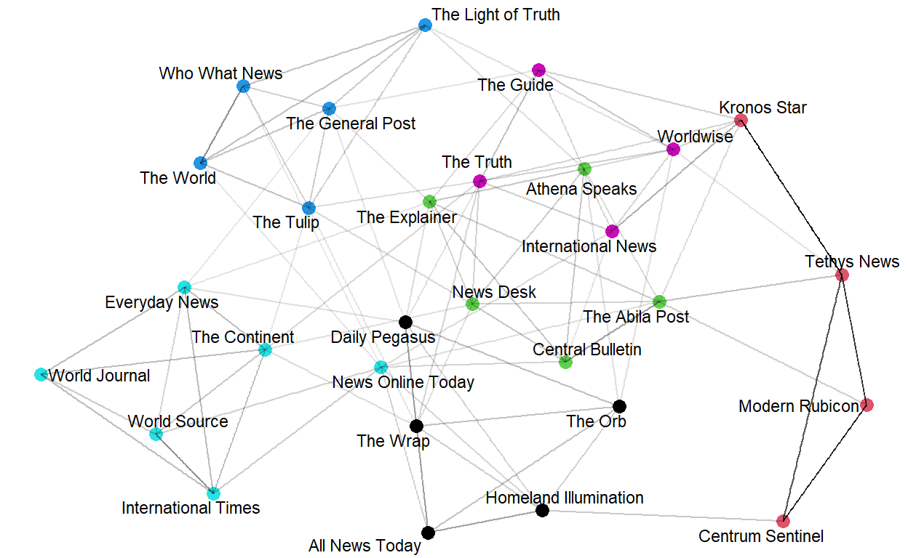
Note that the node color corresponds to text communities (same color indicates a strong relationship between its components).
3D Visualization:
We can also output an interactive visualization of the text network, where the user can mouse over each node in order to reveal its node label. Once again, nodes are colored by their cluster class, and the user must specify a prune_cut argument.
VisTextNetD3(news_text_network, .30)
Clustering
Packages Required:
- ggwordcloud - This package is used to display the wordcloud
packages = c('ggwordcloud')
for(p in packages){
if(!require(p, character.only = T)){
install.packages(p)
}
library(p, character.only = T)
}
From the above visualixation, the newsgroups have been divided into clusters based on strong relationship between its components. To classifying the newsgroups based on the clusters obtained, we use the TextCommunities function, which automatically uses the edge weights and determines the number of clusters within a given network. The function outputs a dataframe with the cluster or “modularity” class to which each document has been assigned.
# get text communities and plot their constituting words
text_communities <- TextCommunities(news_text_network)
ggplot(text_communities %>% filter(modularity_class %in% c(1,2,3,4,5,6)),
aes(label=group,
color=modularity_class)) +
geom_text_wordcloud(eccentricity = 1) +
scale_size_area(max_size = 15) +
theme_minimal() +
facet_wrap(~modularity_class)
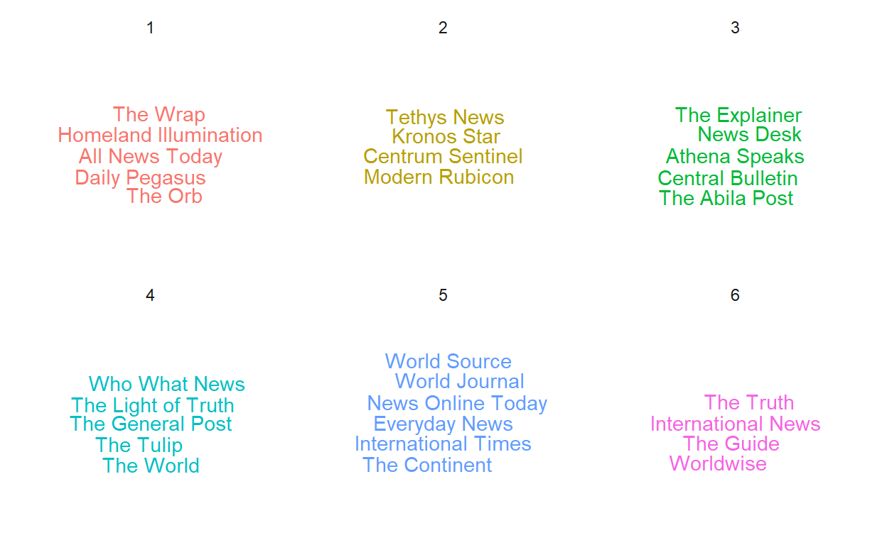
Lets store the cluster information in a ‘cluster’ column in cleaned_text. This will make it easier to refer to clusters for future visualizations.
cleaned_text$cluster=text_communities$modularity_class[match(cleaned_text$newsgroup,text_communities$
group)]
Text Plot
Packages Required:
tidytext - This package is used to convert text into a format that is visualizable with the use of ‘unnest_tokens’ function.
udpipe - R package provides language-agnostic tokenization, tagging, lemmatization and dependency parsing of raw text, which is an essential part in natural language processing.
textplot - To plot data as a text plot, we will be needing this package.
packages = c('tidytext','udpipe','textplot')
for(p in packages){
if(!require(p, character.only = T)){
install.packages(p)
}
library(p, character.only = T)
}
Text Plot for Cluster 1
The word cooccurrence graph graph visualizes collections of word pair and how frequent these word pairs occur. We create a cooccurrence data frame where each row contains the word pair and how many they occur. That cooccurrence data frame will be used as the input for the textplot_cooccurrence function. After we get the correct input, now we can create the chart. We will take only the 15 most occur word pairs.
usenet_words <- cleaned_text %>%
unnest_tokens(word, Content) %>%
filter(str_detect(word, "[a-z']$"),
!word %in% stop_words$word)
x <- subset(usenet_words, cluster == 1)
x <- cooccurrence(x, group = "id", term = "word")
#x
textplot_cooccurrence(x, top_n = 15, subtitle = "showing Cluster 1")
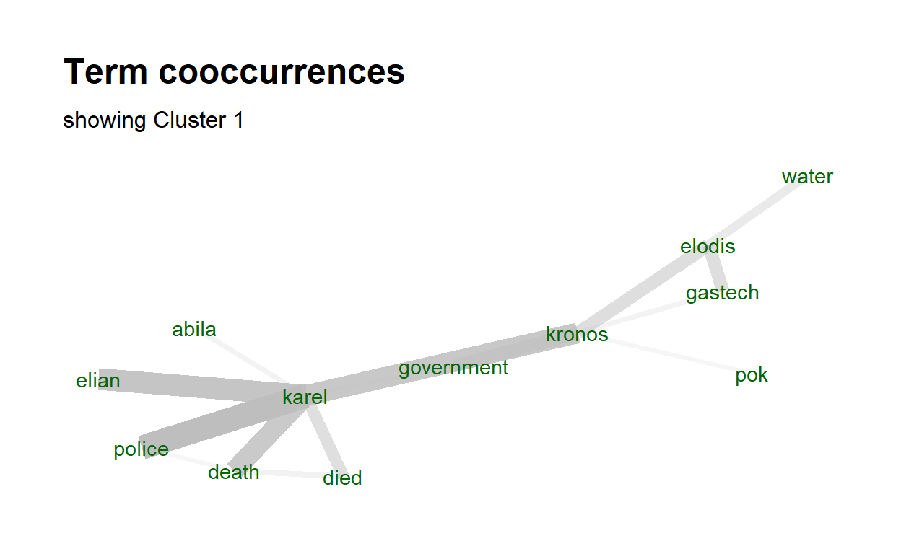
Wordcloud Article Titles
Packages Required:
tidytext - This package is used to convert text into a format that is visualizable with the use of ‘unnest_tokens’ function.
tm - This packages has built in functions such as removeStopwords.
wordcloud - The comparison cloud is developed using this package.
packages = c('tidytext','tm','wordcloud')
for(p in packages){
if(!require(p, character.only = T)){
install.packages(p)
}
library(p, character.only = T)
}
Wordcloud for Titles in Cluster 5
To build a wordcloud, we first need to have the proper data. Therefore, we first extract the required data fom cleande_text and filter it based on the criteria “cluster =5”. This values should be changes when we want to visualize other clusters. Afetr we extract the required data, we need to clean it by removing punctuation, digits and stopwords. All of these can be removed by using regular expression as stated in the code chunk below.
title_data=cleaned_text %>%
group_by(newsgroup) %>%
filter(cluster==5)%>%
summarise_all(funs(toString(na.omit(.))))
corpus2=title_data$Title
#punctuation removal
corpus2=gsub(pattern="\\W",replace=" ",corpus2)
#digits removal
corpus2=gsub(pattern="\\d",replace=" ",corpus2)
#stopwords
corpus2=tolower(corpus2)
corpus2=removeWords(corpus2,stopwords("english"))
#remove single letters
corpus2=gsub(pattern="\\b[A-z]\\b{1}",replace=" ",corpus2)
#remove white space
corpus2=stripWhitespace(corpus2)
After we have obtained the clean data, we will have convert corpus to Term Document matrix. Terms are words in the corpus as rows and documents as columns. The values of the matrix will be the frequency which states how many time a word appeared in a document. When we print the resultant object, it specifies how sparse the matrix is and the number of terms and documents present. Since cluster 5 has 6 newsgroups, the number of documents must also be 6.
corpus3=Corpus(VectorSource(corpus2))
tdm=TermDocumentMatrix(corpus3)
tdm
<<TermDocumentMatrix (terms: 375, documents: 6)>>
Non-/sparse entries: 639/1611
Sparsity : 72%
Maximal term length: 15
Weighting : term frequency (tf)We will now convert the term document matrix to matrix format and rename the document names to the respective newsgroup. As for the comparison.cloud function, there are multiple parameters that can be set as per requirements. For our purpose, we will set the higher frequency words to be in the center and for it we shall set random.order=FALSE. The maximum number of words that can be displayed is set to 300 and the size and color of the title is set to a suitable value as show below.
library("wordcloud")
m=as.matrix(tdm)
colnames(m)=c(title_data$newsgroup)
comparison.cloud(m,max.words = 300,random.order=FALSE,colors=brewer.pal(max(3,ncol(m)),"Dark2") ,title.size=1,
title.colors=NULL, match.colors=FALSE,
title.bg.colors="grey90")
Timeline of Articles
Since the data we have cleaned for the articles also contains the published date, we can make use of the column to visualize how events have been unfolding across the years by means of a timeline.
Packages Required:
ggplot2 - Used for plotting graphs
lattice - Used to plot bar chart
knitr - Used to display the dataframes in a proper way
packages = c('dplyr','ggplot2','udpipe','lattice','knitr')
for(p in packages){
if(!require(p, character.only = T)){
install.packages(p)
}
library(p, character.only = T)
}
Plotting to understand how the frequency of headlines is:
news=cleaned_text
news %>% group_by(Published) %>% count() %>% arrange(desc(n))
# A tibble: 222 x 2
# Groups: Published [222]
Published n
<dttm> <int>
1 2014-01-20 00:00:00 222
2 2014-01-21 00:00:00 43
3 2014-01-19 00:00:00 18
4 2009-06-21 00:00:00 11
5 2009-03-13 00:00:00 9
6 2012-06-21 00:00:00 9
7 2013-12-16 00:00:00 9
8 2010-06-21 00:00:00 8
9 2012-06-20 00:00:00 8
10 2005-04-06 00:00:00 7
# ... with 212 more rowsnews %>% group_by(Published) %>% count() %>% ggplot() + geom_line(aes(Published,n, group = 1))
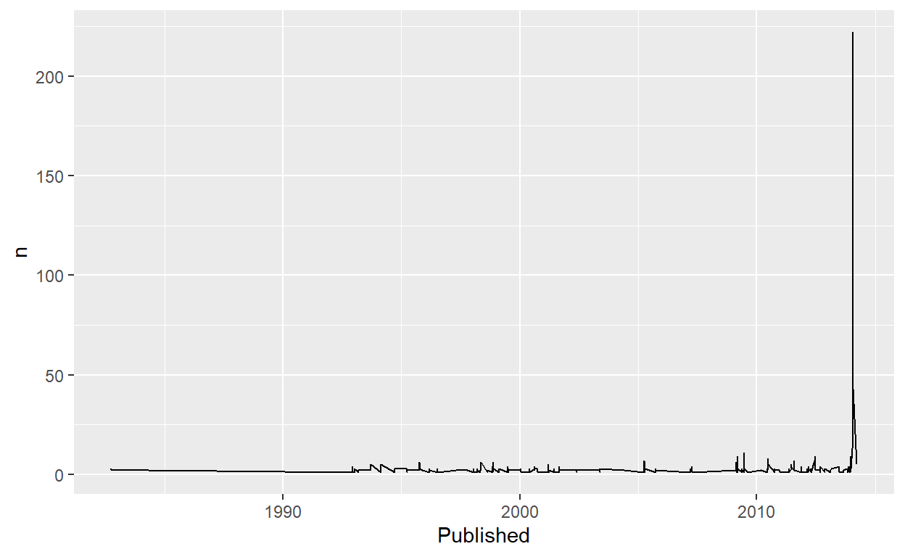
Before we move on to perform text analysis let’s split year from Published date.
[1] "1982" "1984" "1992" "1993" "1994" "1995" "1996" "1997" "1998"
[10] "1999" "2000" "2001" "2002" "2003" "2004" "2005" "2007" "2009"
[19] "2010" "2011" "2012" "2013" "2014"Udpipe Package provides pretrained language models for respective languages and we can download the required model using udpipe_load_model function. This will automatically convert the text into clean text.
model <- udpipe_download_model(language = "english")
udmodel_english <- udpipe_load_model(model)
Filtering data only for 2009. The udpipe_annotate() function takes the language model and annoates the given text data. This is a function that is within the ‘udpipe’ package. We then convert this object to a dataframe. TOP NOUN — VERB Pairs as Keyword pairs: In English (or probably in many languages), Simple a noun and a verb can form a phrase. Like, Dog barked — with the noun Dog and Barked, we can understand the context of the sentence. Reverse-engineering the same with this titles data, let us bring out top phrases - that are just keywords/topics
news_more <- news %>% filter(year == 2009)
s <- udpipe_annotate(udmodel_english, news_more$Title)
x <- data.frame(s)
## Using a sequence of POS tags (noun phrases / verb phrases)
x$phrase_tag <- as_phrasemachine(x$upos, type = "upos")
stats <- keywords_phrases(x = x$phrase_tag, term = tolower(x$token),
pattern = "(A|N)*N(P+D*(A|N)*N)*",
is_regex = TRUE, detailed = FALSE)
stats <- subset(stats, ngram > 1 & freq > 3)
stats$key <- factor(stats$keyword, levels = rev(stats$keyword))
barchart(key ~ freq, data = head(stats, 20), col = "magenta",
main = "Keywords - simple noun phrases", xlab = "Frequency")
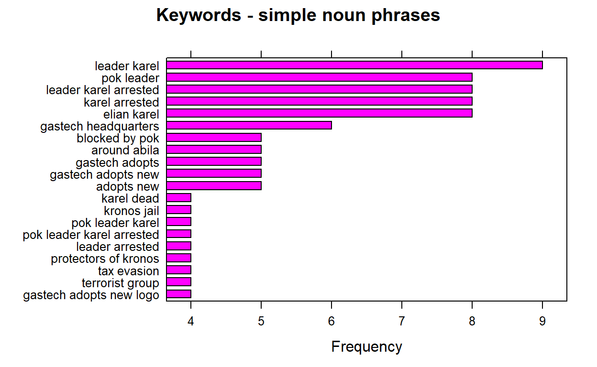
We can re run the above chuck of code by changing the filter criteria “year==” and replace it with all the years we have. And after running the plot each time , we extract the 1st keyword pair which is the highest frequency and store it into a list called ‘keywords’.
#keywords=append(keywords,stats$keyword[1])
When we run the barplot for all available years and store the 1st keyword, we should be getting the below values.
keywords=list("central role", "mediterranean sea","foreign investment","foreign investment","shores of kronos","grand opening","gas fields","elodis possible contamination","public health","minister of health","president kapelou","taxes on oil","public health","hank fluss","public health",NA,"near elodis","leader karel","anniversary of protests","public threat","presidential manor","ipo makes","scene blog")
Next, we shall creat another list that consists of events that explain the keywords and then we will unlist bothe the keywords and event list and create a dataframe with years,keywords and event.
event=list("Before Opening","Before Opening","Before Opening","Before Opening","Before Opening","Contamination","Contamination","Contamination","Health Impact","Health Impact","Health Impact","Health Impact","Health Impact","Health Impact","Health Impact","Health Impact","Protests","Protests","Protests","Protests","Protests","Protests","Protests")
keywords=unlist(keywords, use.names=FALSE)
event=unlist(event, use.names=FALSE)
timeline=data.frame(years,keywords,event)
Then, we will assign colors for appropriate groupings of all the uniques values in ‘event’ so our events will be color coded by type of keyword.
# Add a specified order to these event type labeles
Event_type_levels <- c("Before Opening","Contamination" ,"Health Impact","Protests")
# Define the colors for the event types in the specified order
Event_type_colors <- c("#0070C0", "#FFC000", "#00B050", "#C00000")
# Make the Event_type vector a factor using the levels we defined above
timeline$event <- factor(timeline$event, levels= Event_type_levels, ordered=TRUE)
Each keyword on the timeline will need to be positioned carefully. We will vary the height or direction on the timeline keywords to avoid overlapping or overcrowded text descriptions. Then, we shall merge these variables to the timeline dataframe and call the new dataframe as ‘Merkel’.
# Set the heights we will use for our keywords.
positions <- c(0.5, -0.5, 1.0, -1.0, 1.25, -1.25, 1.5, -1.5, 1.75, -1.75)
# Set the directions we will use for our keyword, for example above and below.
directions <- c(1, -1)
# Assign the positions & directions to each date from those set above.
line_pos <- data.frame(
"years"=unique(timeline$years),
"position"=rep(positions, length.out=length(unique(timeline$years))),
"direction"=rep(directions, length.out=length(unique(timeline$years))))
# Create columns with the specified positions and directions for each milestone event
Merkel <- merge(x=timeline, y=line_pos, by="years", all = TRUE)
# Let's view the new columns.
kable(head(Merkel))
| years | keywords | event | position | direction |
|---|---|---|---|---|
| 1982 | central role | Before Opening | 0.50 | 1 |
| 1984 | mediterranean sea | Before Opening | -0.50 | -1 |
| 1992 | foreign investment | Before Opening | 1.00 | 1 |
| 1993 | foreign investment | Before Opening | -1.00 | -1 |
| 1994 | shores of kronos | Before Opening | 1.25 | 1 |
| 1995 | grand opening | Contamination | -1.25 | -1 |
We are ready to plot our timeline now! Step 1: We first start by creating a plan chart consisting of our x and y coordinates and the labels. Then we will set the background to be plain by using the classic theme.
# Create timeline coordinates with an x and y axis
timeline_plot<-ggplot(Merkel,aes(x=years,y= position, col=event, label=Merkel$keywords))
# Add the label keywords
timeline_plot<-timeline_plot+labs(col="keywords")
# Assigning the colors and order to the keywords
timeline_plot<-timeline_plot+scale_color_manual(values=Event_type_colors, labels=Event_type_levels, drop = FALSE)
# Using the classic theme to remove background gray
timeline_plot<-timeline_plot+theme_classic()
# Plot a horizontal line at y=0 for the timeline
timeline_plot<-timeline_plot+geom_hline(yintercept=0,
color = "black", size=0.3)
# Print plot
timeline_plot
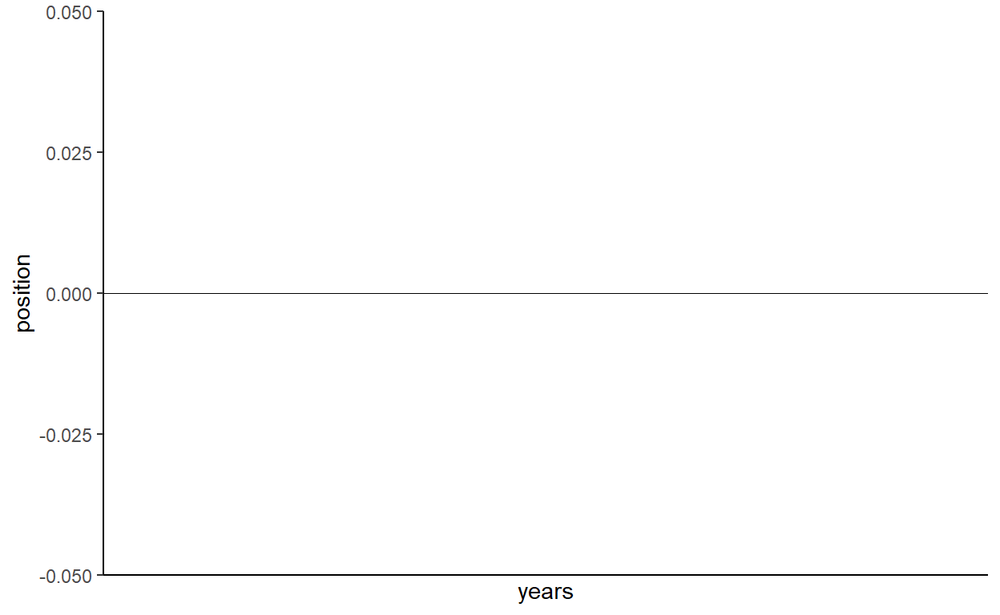
Step 2: Now that we have the plain chart ready, we will now add vertical points where the keywords should come in. These lines are placed by making use of the position values we created previously. The legend it set to be at the bottom to enhance the redability.
# Plot the vertical lines for our timeline's milestone events
timeline_plot<-timeline_plot+geom_segment(data=Merkel, aes(y=Merkel$position,yend=0,xend=Merkel$years), color='black', size=0.2)
# Now let's plot the scatter points at the tips of the vertical lines and date
timeline_plot<-timeline_plot+geom_point(aes(y=Merkel$position), size=3)
# Let's remove the axis since this is a horizontal timeline and postion the legend to the bottom
timeline_plot<-timeline_plot+theme(axis.line.y=element_blank(),
axis.text.y=element_blank(),
axis.title.x=element_blank(),
axis.title.y=element_blank(),
axis.ticks.y=element_blank(),
axis.text.x =element_blank(),
axis.ticks.x =element_blank(),
axis.line.x =element_blank(),
legend.position = "bottom"
)
# Print plot
timeline_plot
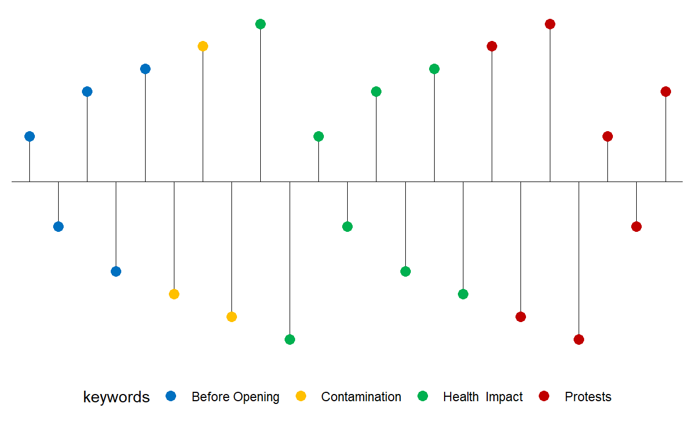
Step 3: Next, we will add years to the x axis. We will include two additional years at the start and end of the axis so that all the keywords will be redabe in the chatrt and wont be cut off.
[1] "1981" "1982" "1984" "1992" "1993" "1994" "1995" "1996" "1997"
[10] "1998" "1999" "2000" "2001" "2002" "2003" "2004" "2005" "2007"
[19] "2009" "2010" "2011" "2012" "2013" "2014" "2015"# Let's add the years
timeline_plot<-timeline_plot+geom_text(data=as.data.frame(years), aes(x=years,y=-0.25,label=years, fontface="bold"),size=2.5, color='black')
Step 4: We need to add the labels of each keyword now. To do this we have to define the text position. A clean timeline should have the labels situated a bit above the scatter points. Since we have the positions of the points already defined, we will place the labels 0.2 pts away from the scatter points.
# Lets offset the labels 0.2 away from scatter points
text_offset <- 0.2
# Let's use the absolute value since we want to add the text_offset and increase space away from the scatter points
absolute_value<-(abs(Merkel$position))
text_position<- absolute_value + text_offset
# Let's keep the direction above or below for the labels to match the scatter points
Merkel$text_position<- text_position * Merkel$direction
# View head of the table
kable(head(Merkel))
| years | keywords | event | position | direction | text_position |
|---|---|---|---|---|---|
| 1982 | central role | Before Opening | 0.50 | 1 | 0.70 |
| 1984 | mediterranean sea | Before Opening | -0.50 | -1 | -0.70 |
| 1992 | foreign investment | Before Opening | 1.00 | 1 | 1.20 |
| 1993 | foreign investment | Before Opening | -1.00 | -1 | -1.20 |
| 1994 | shores of kronos | Before Opening | 1.25 | 1 | 1.45 |
| 1995 | grand opening | Contamination | -1.25 | -1 | -1.45 |
Step 5: For the final step, we can add the labels to the timeline for our keywords and display the timeline.
timeline_plot<-timeline_plot+geom_text(aes(y=Merkel$text_position,label=Merkel$keywords),size=3.5, vjust=0.6)
# Print plot
print(timeline_plot)
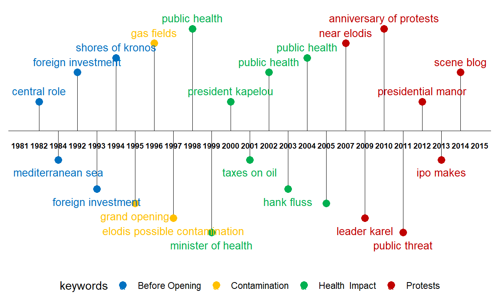
The above timeline plot is extremely useful and easily understandable if we have data based on dates. This plot helps us understand how events have been unfolding through the years, months or dates.
3) Visualizing Email Network
Packages Required
The purpose for requiring the packages are:
lubridate - The ‘wday’ function which converts date to a weekday belongs to this package.
tidygraph - ‘tbl_graph’ function which converts data to an object to display network belons to this package.
ggraph - Plotting of the network object happens via this package.
packages = c('lubridate','tidygraph','ggraph')
for(p in packages){
if(!require(p, character.only = T)){
install.packages(p)
}
library(p, character.only = T)
}
For easier understanding, lets save our clean email data as “edges” and employee data as “nodes”. For simplified analysis, we shall add another variable to "edges’ and call it Weekday that will mention the day of the week the email was sent. For this, we make use of the ‘wday’ function that is part of the ‘lubridate’ package. Set ‘label=true’ to display as ‘Monday, Tuesday, etc’ instead of ‘1,2 3,etc’ and setting ‘abbr=false’ will spell days in full form.
Next, let’s create an aggregated edges that consists of a new variable called “Weight” which holds the count on how many times source sends email to target. for the first aggregate, we shall group by sent date and for the second, we shall group by the Weekday variable that we created earlier.
edges_aggregated1=edges %>%
group_by(Source,Target,SentDate) %>%
summarise(Weight=n()) %>%
filter(Weight >1) %>%
ungroup()
glimpse(edges_aggregated1)
Rows: 1,663
Columns: 4
$ Source <int> 1, 1, 1, 1, 1, 1, 1, 1, 1, 1, 1, 1, 1, 1, 1, 1, 1, ~
$ Target <int> 2, 2, 2, 2, 2, 2, 2, 2, 2, 3, 3, 3, 3, 3, 3, 3, 3, ~
$ SentDate <chr> "2014-01-06", "2014-01-07", "2014-01-08", "2014-01-~
$ Weight <int> 2, 4, 3, 6, 5, 5, 4, 2, 5, 2, 4, 3, 6, 5, 5, 4, 2, ~edges_aggregated2=edges %>%
group_by(Source,Target,Weekday) %>%
summarise(Weight=n()) %>%
filter(Weight >1) %>%
ungroup()
glimpse(edges_aggregated2)
Rows: 1,901
Columns: 4
$ Source <int> 1, 1, 1, 1, 1, 1, 1, 1, 1, 1, 1, 1, 1, 1, 1, 1, 1, 1~
$ Target <int> 2, 2, 2, 2, 2, 3, 3, 3, 3, 3, 4, 4, 4, 4, 4, 5, 5, 5~
$ Weekday <ord> Monday, Tuesday, Wednesday, Thursday, Friday, Monday~
$ Weight <int> 7, 9, 7, 3, 11, 7, 9, 7, 3, 11, 7, 9, 7, 3, 11, 7, 9~Now that we have the aggregated edges, we have to create a wrapper to build the graph model. This can be done using the ‘tbl_graph’ function present in the ‘tidygraph’ package.
network_graph1 = tbl_graph(nodes=nodes, edges=edges_aggregated1,
directed=TRUE )
network_graph2 = tbl_graph(nodes=nodes, edges=edges_aggregated2,
directed=TRUE )
The network graphs we created consists of 3 parts 1) layout: the layout you want to use 2) The aesthetics for edges 3) The aesthetics for nodes
For all these, we make use of the ‘ggraph’ package. We use ‘theme_graph’ to modify the background color. The node and edge color can be changed by specifying the colour in the aes() method under the variable ‘colour’. We can also add other parameters such as the layout type and also color the nodes based on the employment category so as to understand the connectivity between various employment categories.
g <- ggraph(network_graph1,
layout = "nicely") +
geom_edge_link(aes()) +
geom_node_point(aes(colour = CurrentEmploymentType,
size = 3))
g + theme_graph()
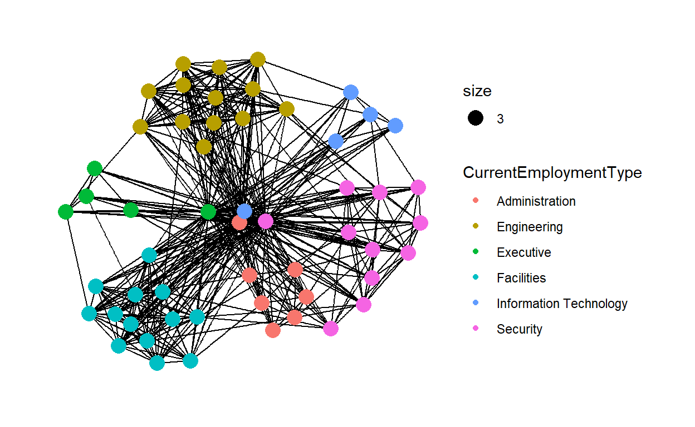
In the code chunk below, the thickness of the edges will be mapped with the Weight variable. So the thicker the edge, the more emails passed between the two nodes.
g <- ggraph(network_graph1,
layout = "nicely") +
geom_edge_link(aes(width=Weight),
alpha=0.2) +
scale_edge_width(range = c(0.1, 5)) +
geom_node_point(aes(colour = CurrentEmploymentType),
size = 3)
g + theme_graph()
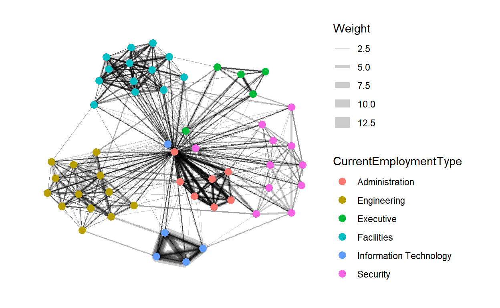
Using facet edge to separate the network based on the the send date.
g <- ggraph(network_graph1,
layout = "nicely") +
geom_edge_link(aes(width=Weight),
alpha=0.2) +
scale_edge_width(range = c(0.1, 5)) +
geom_node_point(aes(colour = CurrentEmploymentType),
size = 2)
g + facet_edges(~SentDate)
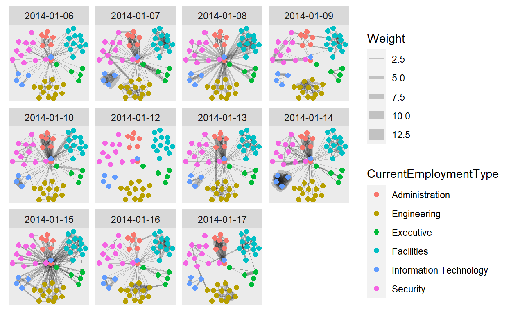
using facet nodes
g <- ggraph(network_graph2,
layout = "nicely") +
geom_edge_link(aes(width=Weight),
alpha=0.2) +
scale_edge_width(range = c(0.1, 5)) +
geom_node_point(aes(colour = CurrentEmploymentType),
size = 2)
g + facet_nodes(~CitizenshipCountry)+
th_foreground(foreground = "grey80",
border = TRUE) +
theme(legend.position = 'bottom')
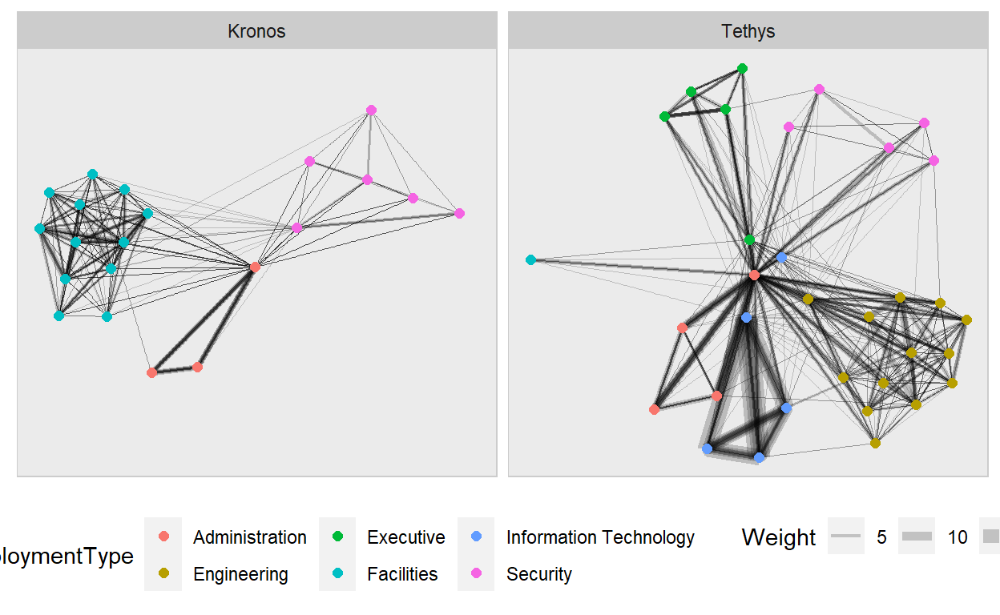
centrality is used to find the relative role played by different nodes. betweenness provides information on how important the node is. The bigger the node soze, higher th ebetweenness centrality.
g <- network_graph2 %>%
ggraph(layout = "fr") +
geom_edge_link(aes(width=Weight),
alpha=0.2) +
scale_edge_width(range = c(0.1, 5)) +
geom_node_point(aes(colour = CitizenshipCountry,
size = centrality_betweenness()))
g + theme_graph()
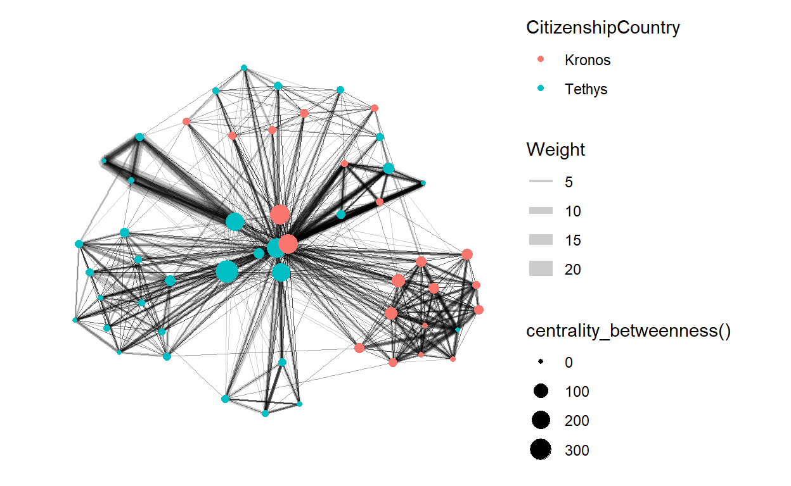
4.0 Response to Questions
4.2 Characterization of any biases identified in the news sources
4.2.1 Setting the Scene:
The newsgroups are divided into 6 clusters based on the their use of the same words. These clusters can be identified with the different color schemes and the thicker the edge between two nodes suggests that the nodes are more similar.
From the text plot, it is visible that cluster number 2 consisting of “Tethys News”, “odern Rubicon”, “Centrum Sentinel” and “Kronos Star” have more number of similar words as the edges connecting them are darker.
4.2.2 Content across Clusters
The content across all articles in cluster 1 seems to be related to the leader of POK Elian Karel, the government and the police. There also are some traces of water most likely representing the water contamination that is occurring. In the whole, this cluster talks more about the relationship between the police, government and Elian Karel with very little involvement of GasTech company.
On the other hand, cluster 2 focuses more on the POK and avoids targeting any one member of the group. This cluster also takes about the employees withing GasTech which was not seen in cluster 1. Moving on to cluster 3, this is quite similar to cluster 1 other than the fact that ther is not mention of Elian Karel in this cluster.
The articles in cluster 4 are the only ones that have talked about GAStech CEO Sten Sanjorge, Jr. There is also a strong relation between “gastech”, “international” and “kronos” which could suggest that the CEO has brought up talks about investing in international lad potentially being Kronos. Cluster 5 in general is categorized into two aspect. One talks about the type of company GasTeach is and this can be understood by the relation between “oil”, “energy”, “tethys” and “gas”. The other category talks about the relation between the government and POK.
The last and final cluster mainly focuses on the tension between the police and POK just like in cluster 2 however, there are also some minor article written about health and this is the only cluster that mentioned this.
4.2.3 Comparing Titles
From the wordcloud below, it is visible that “News Online Today” is the newsgroup that mostly talked about the situation in Kronos.It talked mostly about POK but on the contrast, very little was spoken about the contamination and health of the villagers. Due this, it appears that the newsgroup is biased by targeting the POK group the most. On the other hand, “The Continent” seems to have reported most articles on the calamity, evacuation and discharge but no keywords resemble the GasTech nor the POK. “Everyday News” talked more on the crashes and explode that were occurring in Kronos. The remaining 3 newsgroups appear to be international groups and their keywords are vary diverse and none specifically talking about the situation in Kronos.
4.2.4 Frequency of keywords in Titles
For the year 2009, the most frequent noun-verb pair in titles is “leader karel”. The other most common keywords such as “karel arrested” suggests that in 2009 POK’s leader Elian Karel has been arrested. Other events that have taken place in this year are “gastech adopting new logo”.
4.2.5 Timeline: Unfolding of Events across Years
After obtaining all of the most frequent keywords from the titles of all articles across all years, the timeline shows that from 1982 to 1994, there have been talks about foreign investment and this could suggest that the Tethys based GasTech company is looking to invest its company in another country and towards the end of that period, they have settled on Kronos which can be derived from “Shores of Kronos” keyword in 1994.
Within two years of the opening of the company, there have been discussions about possible contamination as seen from keyword in 1997. During the period of 1998 to 2004, there have been many instances where “public health” was in talks and this suggests that the issue on the health due to the contamination by GasTech company was a serious matter and was mentioned in many articles. From 2007 onward, we can see keywords representing protests which represents the POK becoming stronger year after year.
4.3 Exploring Relationships
4.3.3 Citizenship Biases in Employment Type
The employees who are Kronos citizens were only offered employment in the administration, facilities and security. All the higher profile jobs such as engineering, information technology and executive were only offered to those who are Tethys citizens.
5.0 Storyboard for R-Shiny